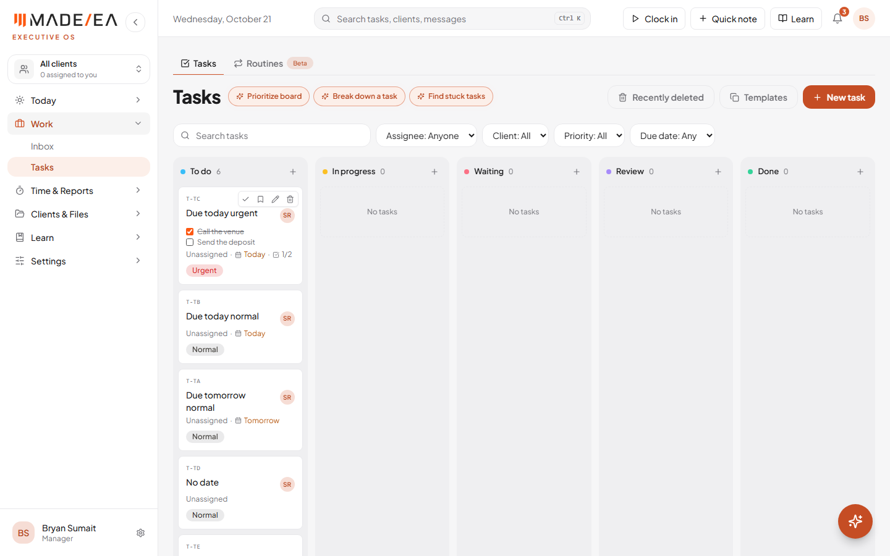
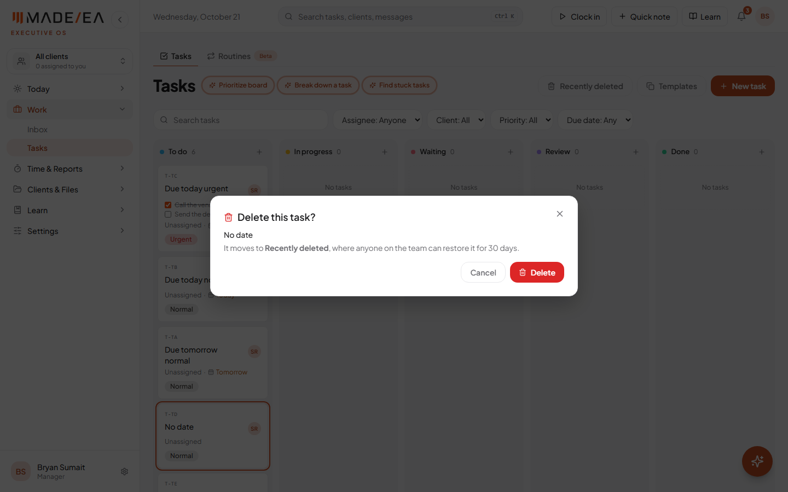
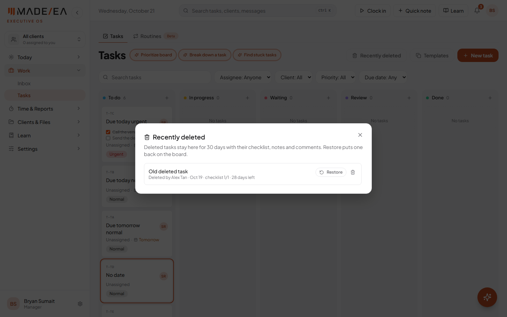
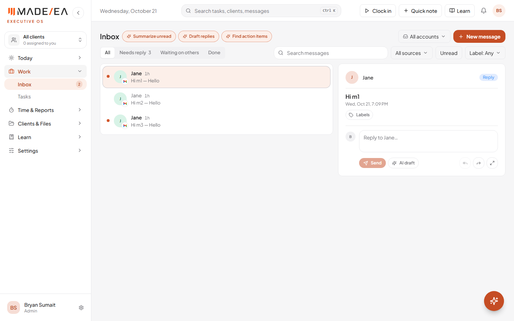
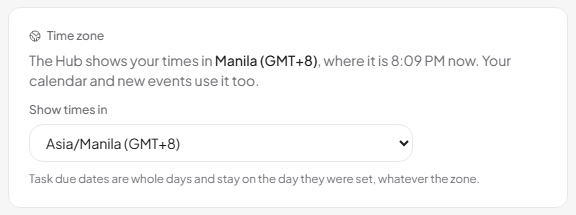
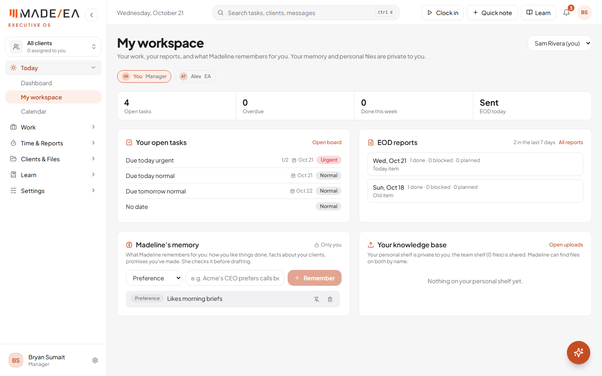
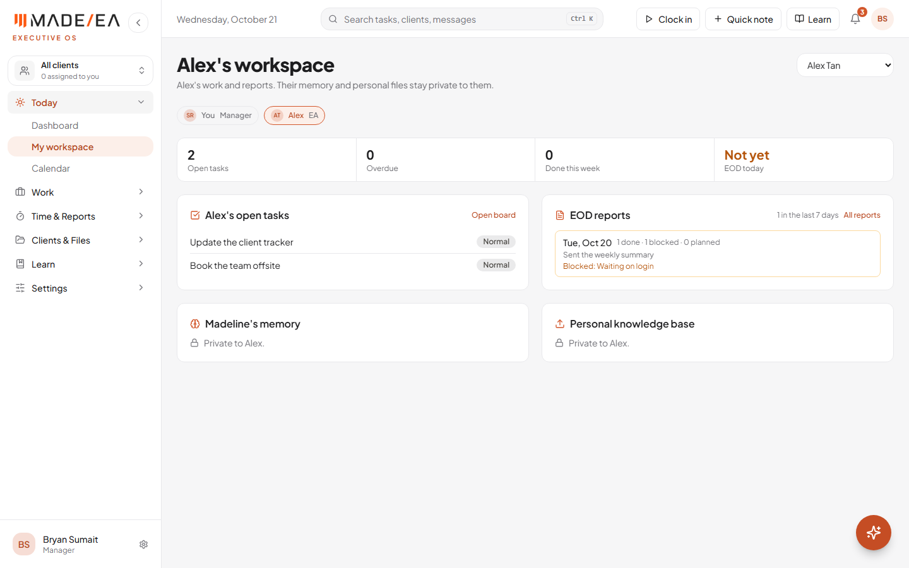

Every recommendation in Reich's testing notes that can be fixed in the Hub is done and live at hub.madeeas.com. The rest of today's requests are live too: Rowena and Prince can see every team member's EOD report, each member has their own workspace, and every account now has its own private memory and knowledge base for Madeline.
Work done 21 October 2026Previous report 20 OctoberStatus Live
At a glance
10 of 11of Reich's recommendations live. The 11th, email, is waiting on Google
30 daysa deleted task can be restored, checklist and all
Task board: checklists on cards, sorting, remembered filters
Checklists on the card. Up to five checklist items show on each card, done ones crossed out, so what's pending is visible without opening the task. They can be ticked right there.
Sorted automatically in every column: earliest due date first, then priority. Of three tasks due today, Urgent comes first, then High, then Normal. Tasks with no date go last.
Filters are remembered. Choose "My tasks" once and the board stays on it when you come back, until you change it. Each person's choice is their own.

Task board: the checklist on the card, and the urgent task due today at the top. Test account with sample tasks.
2Live
Delete asks first, and Recently deleted
Deleting a task used to take one click, with no warning and no way back. Now:
It asks first, and says how much of the checklist would go with it.
Deleted tasks go to Recently deleted (a button on the Tasks page) for 30 days, with their checklist, notes, progress, links and comments. Anyone on the team can restore one, and it comes back exactly as it was.
Deleting for good from there can only be done by whoever deleted it, or a manager.

Delete asks first.Test account.

Recently deleted: who deleted it, and days left. Test account.
3Live
Dashboard task count matches the board
Reich's Dashboard said 7 active tasks while her board showed 5. Deleted tasks weren't the cause: the Dashboard was counting the whole team's unfinished tasks. It now shows Your active tasks, counted exactly the way "My tasks" is on the board, and clicking it opens the board on My tasks.
4Live
Screen sharing stays on while clocked in
Reich asked why an EA could stop screen sharing while the timer kept running. They can't any more:
No "Stop sharing" while clocked in. The header just shows that sharing is on.
Pause is the way to stop for a break or for privacy. It stops the clock and the screenshots together, and shows as a break on the timesheet.
If sharing is stopped another way (the browser's own "Stop sharing" bar), the clock pauses by itself, so tracked time always has screenshots. Resume asks to share the screen again.
The Time tracker page now explains in one paragraph how time tracking and screenshots work together.
5Live
EOD reports: past reports are kept, and the team view
Past reports can't be deleted, by anyone, admins included. A report can only be deleted on its own day; after that it's on record, with a lock in place of the delete button. It can still be updated, which Reich liked.
Rowena and Prince see every member's reports on the Team tab of EOD reports, with coverage and blockers. Both have been set to at least Manager, which the Team tab needs.
6Live
Inbox: unread count and email labels
Unread count in the menu, "Inbox 2", so new mail shows without opening the Inbox. Emails are now marked read when they're opened, which until now never happened.
An Unread filter beside the source filter.
Labels: each person can create their own labels (by client, priority, anything) in seven colours, put them on emails, and filter the Inbox by label. Labels can be renamed, recoloured or deleted.

Inbox: the unread count, the Unread and Label filters, and Labels on the open email. Test account.
7Live
Time zone setting
A Time zone setting in Settings. The Hub shows times in the zone chosen there, and email times and the calendar follow it.
Booking across countries: a new calendar event can be entered in the client's time zone, and the form shows the other side's time, for example "That's 9:00 AM in Dubai (Acme Ltd)".
Each member's time zone shows beside their name in the Admin panel.
Task due dates are whole days, so they stay on the day they were set whatever the zone.

Settings: the Time zone card. Test account.
8Live
A workspace for each member
A new My workspace page, under Today in the menu. Each member's own:
their open tasks, what's overdue, and what they finished this week;
their EOD reports, with any blockers, and whether today's is in;
their Madeline memory and their personal knowledge base.
Managers and up, so Rowena and Prince, can open any member's workspace to see their work and reports. A member's memory and personal files stay private even then.

My workspace.Test account with sample names.

A manager opening a member's workspace: work and reports, memory kept private. Test account with sample names.
9Live
Private memory and knowledge base for every account
Madeline's memory is now per account. Until today it was shared by the whole workspace, so anyone could read or change what Madeline remembered for someone else. Now each person's memory is theirs alone. Memories saved before today belong to whoever saved them.
Madeline uses it. She checks the person's own memory before drafting for a client, and can find documents on their personal shelf and the team shelf by name.
Personal folders are private. A leftover setting let everyone see each other's personal folders in Uploads; that's closed.
10Waiting on Google
Connecting an email account
Reich couldn't connect an email account because Google shows "app not verified". This isn't fixable in the Hub: it clears once Google verifies the app, which needs MadeEA's own domain, then the demo video and permission notes. The unread count and labels above work as soon as email is connected.
What's next
Reich retests her list. If anyone still sees the old version, Ctrl+Shift+R loads the new one.
Check Rowena's role in Admin panel → Accounts shows Manager, so she has the EOD Team tab.
Google verification, so email can be connected and tested.